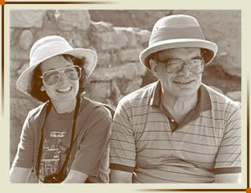
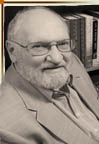
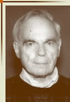
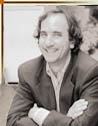
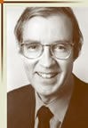
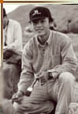

|  | LEON LEVY (co-founder)Leon Levy was not only a distinguished financier, but also a well-informed and generous patron of the arts. Archaeology benefited in a special way from his munificence. He supported many aspiring scholars of the arts and archaeology, as well as institutional projects, in these areas. The White Levy Program for Archaeological Publications was one of his favorite undertakings. He was well aware of the importance of publishing the results of archaeological excavations. His numerous philanthropies will go on under the direction of his spouse, Shelby White, also President of the White Levy Program, who has assured the Board that this Program will continue to be supported. Leon used to say, somewhat facetiously, the two loves of his life were making money and then giving it away. Countless recipients of his largesse can attest especially to the second. |
SHELBY WHITE (co-founder)
Shelby White is an author, collector and philanthropist. She received her B.A. from Mount Holyoke College and her M.A. from Columbia University. She serves on the board of The Metropolitan Museum of Art. She is also a member of the Visiting Committee of the Freer and Sackler Galleries and the Harvard Museum Visiting Committee. In addition, she sits on the boards of The Mount Holyoke College Art Museum, The Bard Graduate Center, The Writers Room and The New York Botanical Garden.
Ms. White is chair of the White Levy Program for Archaeological Publications. She and her late husband, Leon Levy, have been the sponsors of the excavations at the ancient Canaanite city of Ashkelon, Israel, directed by Lawrence Stager of Harvard University and operated continuously for 25 years. Other activities funded by Ms. White and her husband include the Shelby White and Leon Levy Fellowship Program at the Institute of Fine Arts. With her husband, Ms. White established the New Initiative Program at the Institute for Advanced Studies, Princeton, New Jersey, and the Leon Levy Biogenetics Center at Rockefeller University. Ms. White's financial articles have appeared in many American publications including The New York Times, Town and Country, Redbook and Forbes. Her book, What Every Woman Should Know About her Husband's Money, was published by Random House (1992, 1994). Ms. White is a director of Alliance Capital Money Market Funds.
CHRISTOPHER HALLETT (Director)Chris Hallett teaches Roman material culture in the Departments of History of Art and Classics at UC Berkeley. He is currently serving as Chair of the History of Art Department. He is probably best known as a specialist in Roman sculpture, having published a number of studies on portraiture, including a book-length treatment of nude portraiture—The Roman Nude: Heroic Portrait Statuary 200 BC–AD 300 (Oxford 2005). He is the recipient of a Rome Prize from the American Academy in Rome (1995-96) and a Humboldt Fellowship (1997-98). He is a practicing field archaeologist, and has participated in archaeological fieldwork in Israel, Turkey, and in Egypt. Since 1991 he has worked at New York University’s excavations at Aphrodisias in southwestern Turkey. He is co-author (with R.R.R. Smith, Sheila Dillon, Julia Lenaghan, and Julie van Voorhis) of Roman Portrait Sculpture of Aphrodisias (Mainz am Rhein 2006), and he is currently preparing for publication the sculpture from the city's Bouleuterion (Council House). |
|
|  | LAWRENCE E. STAGER (President)Dorot Professor of the Archaeology of Israel in the Departments of Near Eastern Languages and Civilizations, and Anthropology at Harvard University, Lawrence Stager is also Director of the Harvard Semitic Museum as well as the Leon Levy Expedition to Ashkelon. He was Field Director of the Punic Project at Carthage in Tunisia, and at Idalion on Cyprus. Co-author with Philip King of Life in Biblical Israel , Professor Stager has published a large number articles on archaeology, anthropology, and ancient history. His archaeological research and writing focus on ancient Mediterranean cultures of Canaanites, Phoenicians, Philistines, and Israelites. |
ANNIE CAUBETAnnie Caubet, is honorary head curator of the Ancient Near Eastern Department at the Louvre Museum and Associate member of the Academie des Inscriptions. In the Louvre, she supervised the new galleries of the Sackler wing and the Babylonian room and curated a number of international exhibitions. A field archaeologist, she has taken part in excavations at Kition (Cyprus), Ras Shamra-Ugarit (Syria), Failaka (Koweit), Ulugdepe (Turkmenistan) etc. Her publications include excavations reports, research on luxury goods such as ivory and faïence, and the archaeology of music |
|
Eric Kansa(PhD, Harvard University) directs Open Context (http://opencontext.org) a data publishing venue for archaeology. His research interests explore web architecture, service design and how these issues relate to the social and professional context of the digital humanities and social sciences. He also researches policy issues relating to intellectual property, including text-mining and cultural property concerns, and actively participates in a number of Open Science, Open Government, cyberinfrastructure, text mining and scholarly user needs initiatives. Over the past three years, he has taught and practiced project management and information service design in the UC Berkeley School of Information's Clinic program. He has been a principal investigator and co-investigator on projects funded by the William and Flora Hewlett Foundation, the US National Endowment for the Humanities, the Institute for Museum and Library Services, Hewlett-Packard, the Sunlight Foundation, Google, the Alfred P. Sloan Foundation, the Encyclopedia of Life and the National Science Foundation. |
|
|  | PHILIP J. KINGPhilip King is Professor Emeritus of Biblical Studies at Boston College, Past President of the American Schools of Oriental Research, the Society of Biblical Literature, and the Catholic Biblical Association of America. He served as a staff member of several excavations both in Israel and in Arab countries. He has published five books on Bible and Archaeology, including Life in Biblical Israel which he coauthored with Lawrence E. Stager of Harvard University, and most recently his memoir, The Bible is for Living. |
|  | PETER DER MANUELIANPeter Der Manuelian joined both the NELC and Anthropology Departments at Harvard in 2010, after teaching Egyptology at Tufts University for ten years. He has also been on the curatorial staff of the Museum of Fine Arts, Boston, since 1987, and holds the position of Giza Archives Project Founding Director there. In addition to Giza, his Egyptian archaeological and epigraphic site work includes New Kingdom temples at Luxor (Epigraphic Survey, Oriental Institute, University of Chicago), and the Predynastic site of Naqada. His primary research interests include ancient Egyptian history, archaeology, epigraphy, the development of mortuary architecture, and the (icono)graphic nature of Egyptian language and culture in general. He has published on diverse topics and periods in Egyptian history, but currently focuses on the third millennium BC, and specifically on the famous Giza Necropolis, just west of modern Cairo. The Harvard University-Boston Museum of Fine Arts Expedition excavated major portions of the site between 1905 and 1947. Professor Manuelian's Giza Project at Harvard aims to collect and present online all past, present, and future archaeological activity at Giza. |
|  | JAMES H. OTTAWAYHe is Senior Vice President of Dow Jones & Co., Inc. and President of its magazine group and a member of its Board of Directors. James Ottaway is also Chairman of Ottaway Newspapers, Inc., Campbell Hall, New York, the community newspaper subsidiary of Dow Jones & Co., Inc. Former Trustee of the Archaeological Institute of America, and Former Director of the World Wildlife Fund, he is a member of the Board of Trustees of the American School of Classical Studies in Athens. |
|  | HAICHENG WANGHaicheng Wang earned his MA at Peking University (2000) and PhD at Princeton (2007). He is an assistant professor at the School of Art, University of Washington, Seattle. His research interest focuses on the art and archaeology of early China, especially on comparative studies between Bronze Age China and other early civilizations. A current project is a book manuscript tentatively entitled “Early China in Comparative Perspective: the Invention of Writing and the Formation of the State.” Wang is also interested in the art and archaeology of the Silk Road. His archaeological fieldwork has included both excavation and survey and was divided between Neolithic and historical sites on the Silk Roads |